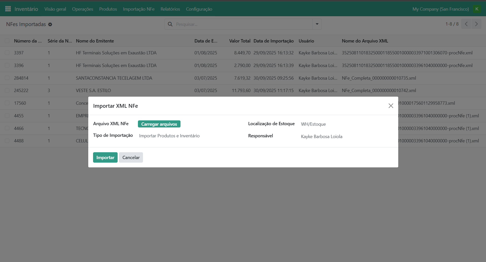

NFe XML Import for Stock and Inventory
Import Brazilian NFe XML files directly into Odoo with automatic stock and inventory updates.
Key Features:
- Automatic import of Brazilian NFe XML files into Inventory
- Real-time stock level updates
- Automatic creation of Products and Partners if missing
- History of processed NFes to avoid duplicates
- Fully integrated with Inventory (Stock) and Purchases
